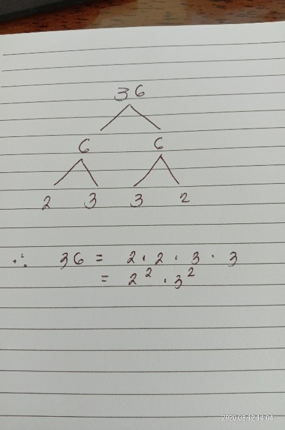

Primes and Composites
Discussion of Concepts
|
Definition:
"An integer p > 1 is called a prime number, or a prime, if it has no divisor d such that 1 < d < p. if p is not prime, then it is called a composite number or a composite."
|
Example 1
- The numbers 11, 17, 19, and 29 are prime numbers because they do not have other factors except themselves and 1.
- Numbers such as 14, 25, 39, and 100 are composite numbers because they have more than two factors:
14 = 1 and 14; 2 and 7:
25 = 1 and 25; 5 and 5:
39 = 1 and 39; 3 and 13
100 = 1 and 100; 2 and 50; 4 and 25;
5 and 20; 10 and 10
Prime Factorization
|
Definition:
"Let n > 1 be a natural number. Then n can be written as a product of one or more prime numbers.
Case 1: n is prime
Then n can be written as the product of the single prime n.
Case 2: n is composite
There exists a, b ɛ N s.t. n = a * b, where 1<a<n and 1<b<n.
In short, prime factorization is the process of breaking down a composite number (n) into prime numbers.
"
|
In finding the prime factors of a composite number, it is better to use prime factor tree.
Example 2
Find the prime factors of 36.

From the figure above on tree factorization, the prime factors of 36 are 2, 2, 3, and 3.